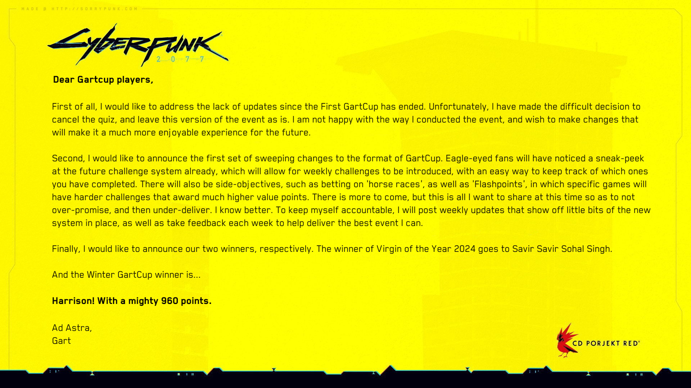

←
Tweet
Geoff Keighley
@geoffkeighley
The creator of GartCup has an update to share on the future of the event. #GartCup2025 #Gart

12:00 PM · Feb 10, 2025
432 Retweets
127 Quote Tweets
2,891 Likes
482
432
2,891